Why this matters
Privacy policies are long and hard to check. The CPRA requires companies to describe consumers' rights, like deleting their data or stopping its sale, but few automated tools exist to check those descriptions consistently.
This study tests whether AI models can do a reliable first pass: finding where a policy describes each right, and showing which words led to each decision. Compliance teams could use it to check their own or their vendors' policies, and regulators could use it to scan for gaps.

The tool identifies what a policy says. It does not judge whether a company follows the law.
The research questions and hypotheses
I asked three questions. Each one had a bar it had to beat before I called it supported.
RQ1: Can supervised NLP classify CPRA consumer rights in company privacy policies?
The models will score a macro F1 above 0.15, the score of a simple rule that labels every passage as Notice.
Result: all three scored 0.7562 to 0.7949.
Where does 0.15 come from?
It comes from a 'what if' test.
Most of the test set is Notice Requirement (1,362 of 1,720 passages). So what if a model just answered 'Notice' every time, without learning anything else?
That 'what if' was run on the real test set:
- Notice: it gets every real Notice passage, but it also wrongly labels everything else as Notice. Combining precision and recall gives it an F1 of 0.88.
- The other five rights: it never predicts them, so it scores 0 on each.
- Overall: the average of all six is 0.88 ÷ 6 = 0.15.
That's the bar. To show they actually learned, the models had to score higher than 0.15.
How the models did
| Right | Simple rule ("what if") | LegalBERT | RoBERTa-large | Flan-T5-base |
|---|---|---|---|---|
| Notice | 0.88 | 0.96 | 0.96 | 0.97 |
| Right to Know | 0 | 0.65 | 0.68 | 0.69 |
| Right to Opt Out | 0 | 0.90 | 0.83 | 0.89 |
| Right to Delete | 0 | 0.86 | 0.88 | 0.90 |
| Right to Correct | 0 | 0.76 | 0.84 | 0.88 |
| Right to Limit | 0 | 0.40 | 0.45 | 0.43 |
| Average (macro F1) | 0.15 | 0.7562 | 0.7734 | 0.7949 |
The 'what if' rule scores 0 on five rights. The models scored on every right, averaging 0.76 to 0.79, about five times higher.
Most passages are Notice, so I asked: what if a model just said 'Notice' every time? That scores 0.88 on Notice and 0 on everything else, so 0.15 overall. My models scored 0.76 to 0.79, so they learned all six rights, not just Notice.
- Precision: of the passages the model labeled with a right, how many were correct?
- Recall: of the passages that truly have that right, how many did the model find?
- F1: combines precision and recall into one score from 0 to 1, for each right.
- Macro F1: the average of the six F1 scores, each right counting equally.
Precision + Recall → F1 for each right → Average of the six = Macro F1
RQ2: When looking at classifying CPRA Consumer Rights from Company's privacy policies, what is the difference between LegalBERT, RoBERTa-large, and Flan-T5's macro F1 performance?
H2: RoBERTa-large and Flan-T5 are both projected to outperform LegalBERT in terms of macro F1 score on the test data.
Result: RoBERTa-large 0.7734 and Flan-T5-base 0.7949 vs LegalBERT 0.7562 (1.7 and 3.9 percentage points higher).
This is a single run, so it does not prove one model is better.
One legal model vs. two general models
LegalBERT was trained on legal text. RoBERTa-large and Flan-T5-base were trained on general text. A common belief is that legal models do better on legal tasks. H2 tests whether that holds for CPRA privacy policies.
Why the general models were expected to score higher
- Prior research: in the LexGLUE legal benchmark (Chalkidis et al., 2022), RoBERTa-large was competitive with, and could surpass, LegalBERT.
- RoBERTa-large: about 3.2 times larger than LegalBERT, and an improved version of the BERT design LegalBERT is built on.
- Flan-T5-base: a different design that reads and writes text, trained on over 1,800 instruction tasks.
What happened
| Model | Type | Macro F1 | vs. LegalBERT |
|---|---|---|---|
| LegalBERT | Legal | 0.7562 | – |
| RoBERTa-large | General | 0.7734 | +1.7 points |
| Flan-T5-base | General | 0.7949 | +3.9 points |
LegalBERT still scored highest on one right, Right to Opt Out (0.90).
What it does not show
The gaps are small, come from one run, and the models differ in size and design. So this does not show which model is better, or why.
Chatbots like ChatGPT can answer in any words and often make up legal facts when simply asked: one study found they hallucinate on legal questions 58–88% of the time (Dahl et al., 2024). GPT can also be fine-tuned, but it is a closed model: it can't be downloaded or inspected, and its versions can change over time. This study used open models that could be fully controlled, explained, and rerun. It also tested a model that writes its answers, Flan-T5-base, in an open version. Fine-tuning a frontier model like GPT is future work.
Prior research found larger general models like RoBERTa-large can match or beat LegalBERT, so I expected the two general models to score higher. They did, by 1.7 and 3.9 points. But that's one run with different-sized models, so I'm not claiming one is better. LegalBERT actually scored highest on Right to Opt Out.
RQ3: How will the selected models perform against the highest common category, Notice Requirement compared to the rarer categories of consumer rights?
H3: It is projected that each model will achieve an F1 score on Notice Requirement above 0.88; which is the score of the simple rule on that label, and higher than on each of the five less common classes in the test evaluation.
Result: Notice was 0.96 to 0.97 for all three models. The best score any model got on the other five rights was 0.90.
Where does 0.88 come from?
It comes from the same 'what if' test used for H1: what if a model just answered 'Notice' for every passage?
On Notice, that rule gets every real Notice passage, but it also wrongly labels everything else as Notice. Combining precision and recall gives it an F1 of 0.88.
So 0.88 is the bar for Notice. To beat it, a model has to do more than say 'Notice' every time. It also has to recognize when a passage is not Notice.
Why Notice was expected to score highest
Notice has far more training data than any other right, about 9 times more than the next one. This imbalance reflects real privacy policies: most of a policy is lists of the personal information a company collects, shares, and sells, which the CPRA requires companies to disclose. The rights sections are usually just a few paragraphs.
| Category | Training passages |
|---|---|
| Notice | 5,016 |
| Right to Know | 555 |
| Right to Opt Out | 408 |
| Right to Delete | 248 |
| Right to Correct | 167 |
| Right to Limit | 96 |
What happened
| Model | Notice | Beat 0.88? | Best of the other five | Notice highest? |
|---|---|---|---|---|
| LegalBERT | 0.96 | Yes | 0.90 (Opt Out) | Yes |
| RoBERTa-large | 0.96 | Yes | 0.88 (Delete) | Yes |
| Flan-T5-base | 0.97 | Yes | 0.90 (Delete) | Yes |
Both parts of H3 hold for all three models.
Data didn't explain everything
- Right to Know had 555 training passages but scored only 0.65 to 0.69. Its passages describe the types of personal information a company collects, which can look a lot like Notice passages, so the models sometimes confused the two.
- Right to Correct had only 167 training passages but scored 0.76 to 0.88.
- Right to Limit scored lowest (0.40 to 0.45), but it had only 16 test passages, so its score is the least reliable.
So more data helps, but how distinct a right's wording is also matters. Right to Know and Right to Limit would benefit most from human review.
A preliminary run with more companies and less Notice in training scored about 0.84 to 0.85, but it changed two things at once and isn't directly comparable. See 'How the imbalance was handled' under the label chart for details.
What it means
The models are most dependable on Notice and the clearly worded rights, like Right to Delete and Right to Opt Out. The imbalance in the data is real, not a flaw in the dataset, because it reflects how privacy policies are actually written. In practice, a compliance reviewer should check Right to Know and Right to Limit most closely.
Notice is most of what a privacy policy says, so it has the most training data, and the models scored highest on it, 0.96 to 0.97, well above the 0.88 'what if' bar. But more data didn't explain everything: Right to Know looks a lot like Notice and scored lower. I also tried a preliminary run with more companies and less Notice, which scored about 0.84 to 0.85, but it changed two things at once, so it's future work, not a result.
Each hypothesis is judged on one run on the test set.
How the models work
Key terms
- Parameters: the internal settings a model adjusts while it learns. More parameters generally means a bigger model that can capture more patterns.
- Pretraining: the general reading a model did before this study, on a large amount of text.
- Fine-tuning: the training done in this study, where each model learned the six CPRA categories from 6,328 labeled passages.
- Encoder-only: reads a passage and gives a score for each category.
- Encoder-decoder: reads a passage and writes an answer as text.
About 110 million parameters. It reads text only (encoder only). It was trained on legal documents, such as legislation, court cases, and contracts.
Why I chose it: it's designed for legal text, so it's a natural reference point for a legal task.
Who made it: researchers at the Athens University of Economics and Business.
History: built on BERT, a model Google released in 2018. LegalBERT is BERT pretrained from scratch on 12 GB of English legal text, including legislation, court cases, and contracts.
Size: about 110 million parameters (12 layers).
How it was used here: fine-tuned on the CPRA training set to give a score for each of the six categories. Each category has its own cutoff, chosen on the validation set.
Why it was chosen: it represents the common belief that a model pretrained on legal text is needed for strong results on legal tasks. It is the legal-domain reference point the other two models are compared against.
About 355 million parameters. It reads text only (encoder only). It was trained on general English, not legal text.
Why I chose it: to see how a strong general-purpose model does on the same task without legal training.
Who made it: Facebook AI Research (now Meta).
History: an improved version of BERT, the same design LegalBERT is built on. It made three changes: it removed a training step that hurt performance (next sentence prediction), it hid different words each time it trained (dynamic masking), and it trained on 160 GB of general English text, ten times more than BERT's 16 GB.
Size: about 355 million parameters (24 layers), about 3.2 times larger than LegalBERT.
How it was used here: set up the same way as LegalBERT, giving a score for each of the six categories with its own validation-tuned cutoff.
Why it was chosen: it is a strong general-purpose model with no legal pretraining. In the LexGLUE legal benchmark (Chalkidis et al., 2022), it was competitive with, and could surpass, LegalBERT.
About 250 million parameters. It reads text and writes text (encoder-decoder). It was trained on 1,800+ instruction tasks.
Why I chose it: to include a different design, so the results aren't limited to one type of model.
Who made it: Google.
History: built on T5, which treats every task as text in, text out. 'Flan' means it was further trained on over 1,800 instruction tasks, such as classification, question answering, summarization, and translation, so it is good at following instructions.
Size: about 250 million parameters, split across an encoder (which reads) and a decoder (which writes). That makes it smaller than RoBERTa-large but larger than LegalBERT.
How it was used here: each passage was given to it as an instruction, and it wrote back the matching label names. Only the six valid CPRA label names were kept, so it could not give open-ended answers. Because it writes words instead of giving scores, it has no cutoffs and uses standard cross-entropy loss instead of focal loss.
Why it was chosen: to include a different kind of model, so the results are not limited to versions of BERT.
All three models were trained on the same data, with the same split and the same seed, and all tuning was done on the validation set. They differ in size, design, and settings, so this study compares how they perform, not why one scores higher.
LegalBERT and RoBERTa-large
These models give a confidence score for each right. If the score is above that right's cutoff, the passage gets the label.
Flan-T5-base
Flan-T5-base writes its answer, like "Right_to_Delete." Anything that isn't one of the six label names is ignored. Because it writes words instead of giving scores, it has no cutoffs and uses regular cross-entropy loss.
The data
A passage is a piece of a privacy policy that legal experts highlighted and labeled. This comes from the C3PA dataset. One passage can have more than one label.
Counts are across all 159 companies. A passage can be counted more than once when it carries more than one label.
Notice Requirement dominates because that is what privacy policies actually look like. The CPRA requires every policy to list the personal information a company collects, shares, and sells, and those lists are long. The rights sections, like how to delete or opt out, are usually just a few paragraphs. So this imbalance is real, not a flaw in the data.
Why not just balance the data?
The validation and test sets were kept in their natural mix on purpose, so the scores reflect how the models would perform on real privacy policies. Instead of changing the data, the imbalance was handled during training and scoring.
Four ways the imbalance was handled
- Class weights: mistakes on rare rights count more during training. Right to Limit gets a weight of 64.92, while Notice gets 0.26.
- Focal loss: passages the model already gets right count less, so training focuses on the harder, rarer cases.
- A cutoff for each right: each right gets its own cutoff, tuned on validation, instead of one cutoff for all.
- Macro F1: every right counts equally in the main score, so a model can't look good by only learning Notice.
Class weights, focal loss, and cutoffs apply to LegalBERT and RoBERTa-large. Flan-T5-base writes label names, so it uses standard training.
To see what happens when Notice is less dominant, a preliminary second run was done. It used 60% of the C3PA companies instead of 40%, and removed some Notice-only passages from the training set only. Validation and test were not trimmed, so they kept the real-world mix. That run scored about 0.84 to 0.85 macro F1, compared with 0.76 to 0.79 in the main study.
Why it isn't reported as the main result: it changed two things at once (more companies and less Notice in training), and it was scored on a different set of test companies. So the higher score can't be credited to the trimming alone. It may come from simply having more data. Testing the trimming on its own, as a controlled experiment, is future work.
Most of a privacy policy is Notice, so the data is naturally imbalanced. I kept the test set in that real-world mix, and handled the imbalance with class weights, focal loss, separate cutoffs, and macro F1. I also tried a preliminary run with more companies and less Notice in training, which scored about 0.84 to 0.85. But it changed two things at once and used different test companies, so it points to future work, not a conclusion.
Train, validation, and test
I split the 159 companies into three groups. The split is by company, not by passage, in the proportions 70 / 15 / 15.
Models learn from 111 companies (6,328 passages).
Pick the best settings, best checkpoint and cutoffs using 23 other companies (1,592 passages).
Grade once on 25 companies the models never saw (1,720 passages).
Think of it this way: training passages are study materials, validation passages are a practice exam, and the test passages are a final exam that is taken once.
Where the models learn.
Each model reads a passage along with its correct labels, makes a guess, and compares it to the right answer. After each small batch of passages (8 at a time, or 4 for RoBERTa-large), it adjusts itself to make fewer mistakes. One full pass through all 6,328 passages is an epoch: LegalBERT trained for 2, RoBERTa-large up to 6, and Flan-T5-base for 5. Class weights and focal loss are applied here so rare rights count more. The models never see validation or test passages during training.
Where settings are chosen, such as how confident a model must be before assigning a label.
The models are never trained on these passages. Validation is only used to make choices: after each epoch, the best-scoring version of each model is kept; settings are compared (two setups for LegalBERT, 2 vs. 6 epochs for RoBERTa-large); and each right's cutoff is chosen by trying values from 0.10 to 0.825. Because choices are made here, the final model is indirectly fitted to validation, which is why a separate test set is still needed.
The final grade, used once, on companies the models never saw.
After every choice was locked in, each model was run on these 25 companies one time. Every result reported on this site comes from that single pass. Nothing was chosen on the test set, and nothing was changed after seeing the results.
All three splits have the same label mix, because nothing was trimmed or rebalanced before splitting.
| Label | Train | Validation | Test |
|---|---|---|---|
| Notice | 5,016 | 1,321 | 1,362 |
| Know | 555 | 110 | 187 |
| Opt out | 408 | 88 | 101 |
| Delete | 248 | 62 | 76 |
| Correct | 167 | 41 | 45 |
| Limit | 96 | 11 | 16 |
Some passages describe more than one right at once, so they carry more than one label. For example: 'In addition, the CCPA provides you the right to access and delete Personal Data for California residents.' That one sentence covers both the Right to Know (access) and the Right to Delete, so it carries both labels.
How this is handled:
- Labeling: each passage gets every right it describes, instead of being forced into one.
- The models: each model makes six separate yes-or-no decisions for every passage, one per right. This is called multi-label classification.
- Counting: a passage with two labels is counted once for each label, so each column adds up to slightly more than its passage count. For example, the test set has 1,787 labels across 1,720 passages.
- Scoring: each right is graded on its own, so a model gets credit for every right it correctly finds.
199 passages in these splits carry more than one label, about 2% (510 in the full cleaned dataset, before sampling). Most passages describe just one right.
Right to Limit has only 11 validation and 16 test passages, so its cutoff and score are the least reliable of the six rights.
Why split by company. Passages from one policy share wording, so a company is entirely in one split and never divided.
Why the test is used only once. Tuning on it would make the grade look better than it really is.
Why it can't leak. Duplicates were removed before splitting, every company is in only one split, all choices were made on validation, and every random step uses seed 42.
The math
Precision is how often a flag is right. If the model flags 10 passages as Right_to_Delete and 8 really are, precision is 0.8. Glossary
Recall is how much of a right the model finds. If 20 passages really are Right_to_Delete and the model flags 12, recall is 0.6. Glossary
F1 is a single score from 0 to 1 that balances precision and recall. It is not a percentage of correct answers. Macro F1 averages that score across all six rights. Each right counts equally. That stops a model from scoring well just by getting the common label right. Glossary
Accuracy is misleading when one category dominates. Take the 'what if' rule that labels every passage as Notice: for each passage it says 'yes' to Notice and 'no' to the other five rights. Because most passages aren't Delete, Opt Out, Correct, Know, or Limit, those 'no' answers are usually right. Graded by accuracy, that rule would score roughly 92%, even though it never finds a single passage for five of the six rights. Macro F1 gives the same rule 0.15, which shows the truth. That's why this study uses precision, recall, and macro F1 (see Sections 2.4 and 3.6 of the paper).
- The model reads a passage and gives a score from 0 to 1 for each of the six rights (for example, Right to Delete: 0.963). Flan-T5-base instead writes the label names directly.
- Each right has its own cutoff, chosen on validation. If the score passes it, the passage gets that label (for example, LegalBERT's Delete cutoff is 0.725, so 0.963 means yes).
- Each label is compared to the correct answer: a correct label (true positive), a false alarm (false positive), or a miss (false negative).
- Those counts give precision, recall, and F1 for each right.
- The six F1 scores are averaged into macro F1, the main score.
Note: during training, the models learn from a different measure called loss (focal loss with class weights, so rare rights count more). F1 is the grade at the end; loss is how the models learn along the way.
The grey bar is a simple rule that does no learning: it labels every passage as Notice. Glossary
Macro precision / recall: LegalBERT 0.77 / 0.76, RoBERTa-large 0.78 / 0.77, Flan-T5-base 0.87 / 0.75.
All three models scored close together, from 0.756 to 0.795, and far above the simple rule.
Flan-T5-base is the most cautious. It has the highest precision at 0.87 and a lower recall at 0.75, so it flags fewer passages overall.
Right_to_Know and Right_to_Limit_Sensitive were the hardest for every model.
F1 score per right on the test split. "Passages" is how many test passages truly carry that right.
Of everything the model flagged, how much was right.
TP = correct flags, FP = wrong flags, FN = missed ones.
Of everything that was really there, how much the model found.
One score that balances the two. It's low if either one is low.
Example: LegalBERT on Right to Delete had precision 0.82 and recall 0.91. F1 = 2 × 0.82 × 0.91 / (0.82 + 0.91) = 0.86.
Every right counts the same, so a model can't score well just by getting Notice right.
Example: Flan-T5-base's six F1s (0.97, 0.69, 0.90, 0.88, 0.89, 0.43) average to about 0.79.
Label everything Notice. Notice gets F1 0.88 (it catches every Notice passage, but 21% of the flags are wrong). The other five rights get 0, because it never predicts them.
These give more weight to common labels. Macro F1 is the main score because all six rights matter equally under the law.
Rare rights count more during training. This uses the training set only.
Example: Limit appears in 96 of 6,328 training passages. (6,328 − 96) ÷ 96 = 64.92. Notice: (6,328 − 5,016) ÷ 5,016 = 0.26.
Easy examples the model already gets right count less, so training focuses on the hard ones.
Example: if the model is 90% sure and correct, that example counts only 0.1 as much (1 − 0.9). If it's only 30% sure, it counts 0.7.
The model turns each right into a score from 0 to 1. If the score is above that right's cutoff, the passage gets the label.
Example: LegalBERT gave a Right to Delete passage a score of 0.963. Its cutoff is 0.725, so it was labeled Right to Delete.
Cutoffs were tested from 0.10 to 0.825 in steps of 0.025 on the validation set, one per right. The one with the best validation macro F1 was kept.
Why a model said what it said
Explainability tools show which words pushed a model toward a label, so a reviewer can see why a decision was made.
• SHAP was used on LegalBERT and RoBERTa-large. These models give a score for each right, and SHAP shows how much each word added to that score.
• LIME was used on Flan-T5-base, which writes label names instead of giving scores. LIME removes words and checks whether the answer changes.
Every passage shown here truly carries the label being explained.
What the explanations showed (Section 4.5)
- Right to Delete (LegalBERT and Flan-T5-base): words like 'delete' drove the decision.
- Right to Opt Out (RoBERTa-large and Flan-T5-base): on the same passage, both models ranked 'no' and 'longer' among their top words, from 'no longer be shared.' Two different models, explained by two different methods, focused on the same phrase.
- Common words like 'on' and 'have' sometimes carried weight similar to key words.
SHAP examples (LegalBERT and RoBERTa-large)
“Deletion Request Rights: You have the right to request that PeopleSearcher delete any of your personal information… we will delete (and direct our service providers to delete)…”
LegalBERT scored this passage 0.963 for Right to Delete, above its cutoff of 0.725, so it got the label.
“At any time you may contact PeopleSearcher via email to request that your Personal Information no longer be shared by PeopleSearcher.”
RoBERTa-large scored this passage above its Opt Out cutoff, so it got the label.
LIME examples (Flan-T5-base)
These explanations show which words influenced one prediction on one passage. They are examples, not proof that the models understand the law. LIME also uses random sampling, so its exact weights can shift between runs. SHAP and LIME use different scales, so compare words within one model, not across models.
SHAP and LIME show which words drove each decision. For opt-out, two different models both focused on 'no longer be shared,' which is exactly what a compliance reviewer would look for. But some ordinary words like 'on' and 'have' also carried weight, so I treat these as examples that make decisions reviewable, not as proof the models understand the law.
Passages are shown word for word from the test split, with their original line breaks restored.
Limitations
- Results come from a single run, so the small gaps between models do not show that one is better.
- The models differ in size, design, and training settings, so the comparison does not show why one scored higher.
- All data comes from one dataset (C3PA). The models have not been tested on policies from other sources.
- Right_to_Limit_Sensitive has only 16 test passages, so its score is unstable.
- Some passages contain formatting leftovers (such as "\n" or "|||") and near-duplicates from the source data.
- I grouped C3PA's categories into these six labels myself.
Future work: a preliminary run with more companies and fewer Notice passages in training scored about 0.84 to 0.85, but it used different test companies, so it can't be compared directly to these results.
Technical details
Pipeline, in order
- Group raw expert annotations into
(document, text)passages and merge duplicate rows: 45,121 rows become 26,740 passages. - Deduplicate so each sentence appears once. Identical boilerplate shared across policies (992 passages) is removed, leaving 25,748 passages across 399 documents.
- Subsample to 40% of documents at random with seed 42, giving 159 documents and 9,640 passages.
- Split by document 70 / 15 / 15 with seed 42.
Training settings
| Setting | LegalBERT | RoBERTa-large | Flan-T5-base |
|---|---|---|---|
| Learning rate | 2e-5 | 2e-5 | 3e-4 |
| Epochs | 2 | Up to 6 | 5 |
| Batch size | 8 | 4 | 8 |
| Weight decay | 0.01 | 0.01 | 0.01 |
| Warmup | 6% of steps | 6% of steps | 100 steps |
| Early stopping | patience 3 | patience 2 | none |
| Max length | 512 | 256 | 256 |
| Dropout | 0.2 | 0.2 | default |
| Loss | Focal loss (γ=1.0) + class weights | Focal loss (γ=1.0) + class weights | Cross entropy |
| Seed | 42 | 42 | 42 |
LegalBERT's settings were picked from two options using the validation set only. RoBERTa-large used the same learning rate, dropout, weight decay and focal gamma, and two epoch options (2 or 6) were compared on validation; 6 was picked. Flan-T5-base used fixed settings.
Class weights and focal loss
Two methods counter the label imbalance during training. Per-class weights multiply each label's loss by negatives divided by positives, so rare rights count more. Focal loss reduces the loss on passages the model already gets right, focusing training on the hard cases.
| Label | Per-class weight |
|---|---|
Notice_Requirement | 0.26 |
Right_to_Know | 10.40 |
Right_to_Opt_Out | 14.51 |
Right_to_Delete | 24.52 |
Right_to_Correct | 36.89 |
Right_to_Limit_Sensitive | 64.92 |
Thresholds
A threshold is the probability above which a passage is given a label. For LegalBERT and RoBERTa-large I tuned one threshold per label on the validation set. I used the same rule for both. I tried every value from 0.10 to 0.825 in steps of 0.025. I kept the one with the best validation macro F1. Flan-T5-base writes label names as text, so it has no thresholds.
| Label | LegalBERT | RoBERTa-large |
|---|---|---|
Notice_Requirement | 0.400 | 0.100 |
Right_to_Correct | 0.500 | 0.750 |
Right_to_Delete | 0.725 | 0.725 |
Right_to_Know | 0.825 | 0.800 |
Right_to_Limit_Sensitive | 0.425 | 0.575 |
Right_to_Opt_Out | 0.475 | 0.800 |
Committee concerns and how leakage was prevented
| Concern | Before | After |
|---|---|---|
| Overlap | The same passage could appear in more than one group. | 992 duplicate passages were removed first. These were mostly template text copied word for word across companies' policies: standard cookie notices (such as 'Strictly Necessary Cookies – Always Active'), section headings like 'Information We Collect,' and standard rights sentences. About 73% were Notice passages. One copy of each was kept, so the text is still learned from, just once. Code checks confirm no company or identical passage is in more than one group. Common words like 'delete' or 'opt out' still appear in both training and testing, which is expected: leakage means the same passage appears in both, not the same words. |
| A company in two groups | Passages from one policy share wording, so one company could span groups. | Companies are the unit of splitting, so no company's passages appear in two splits. |
| Tuning on the test set | Tuning on the test set would make the grade look better than it really is. | Thresholds and settings are chosen on validation only. The test split is used once, at the end. |
| Randomness | A different random draw would produce a different split. | Every random draw uses seed 42, so the data splits are reproduced exactly. |
The pipeline is reproducible from CPRA_40pct_CLEAN_(3).ipynb and export_dataset.py.
No-learning baseline
One strategy that does no learning, scored on the same test split: "Simple rule (label everything Notice)" assigns only the most common label to every passage and scores 0.1473.
Explore the data
Sources & references
Data & legal sources
- C3PA dataset (Bin Musa et al., released 2024; EMNLP 2024)
- C3PA paper (EMNLP 2024)
- C3PA paper (arXiv)
- CCPA / CPRA (California Civil Code, Div. 3, Pt. 4, Title 1.81.5)
- Proposition 24 (2020): CPRA text
Models
- LegalBERT (nlpaueb, 2020)
- RoBERTa-large (Meta AI, 2019)
- Flan-T5-base (Google Research, 2022)
Tools
- LIME (word-by-word attribution, used with Flan-T5-base)
- Hugging Face Transformers (training & tokenizers)
- US Census Bureau state boundaries (public domain, source of the map above)
- Chart.js · Bootstrap 5 (this page)
Glossary
Click a term to reveal its definition.